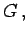
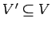
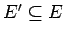

Inhalt Index DeskTop Bronstein

 Algebra und Diskrete Mathematik Algorithmen der Graphentheorie Grundbegriffe und Bezeichnungen
Algebra und Diskrete Mathematik Algorithmen der Graphentheorie Grundbegriffe und Bezeichnungen


Ist G=(V,E) ein Graph, dann heißt ein Graph G'=(V',E') Untergraph von  wenn  und  gilt.
Enthält E' genau diejenigen Kanten aus E, die Knoten aus V' verbinden, dann heißt G' der von V' induzierte Untergraph von G.
Ein Untergraph G'=(V',E') von G=(V,E) mit V'=V wird Teilgraph von G genannt.
Unter einem Faktor F eines Graphen G versteht man einen regulären Untergraphen von G, der alle Knoten von G enthält.